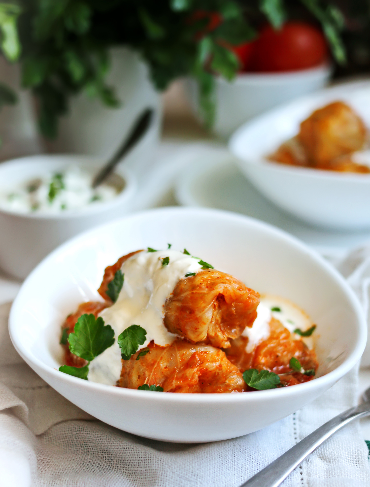

Голубцы — одно из любимых во всех бывших республиках СССР блюд украинской кухни. Но часто многие спотыкаются о пункт с разделкой капустного кочана на листья. Есть много версий того, как быстро и просто это сделать: от замораживания кочана целиком и последующей разморозки капусты, когда листья становятся более податливыми, до пропаривания в микроволновке в пищевой пленке. Но поверьте, лучше просто взять глубокую кастрюлю с кипятком и удобные кулинарные щипцы — больше ничего не надо. Опустить кочан в кипяток, недолго бланшировать, достать, немного остудить и разобрать на листья. Можно приготовить голубцы из савойской капусты, у нее листья отделяются проще, к тому же вкус интереснее, а внешний вид — эффектнее (только не стоит забывать, что у ее листьев очень плотная центральная прожилка, которую обязательно нужно вырезать). А проще всего взять пекинскую капусту. Но предварительно ее листья также необходимо подготовить — бланшировать в кипятке для эластичности и немного срезать утолщения посередине. Срезанные капустные прожилки можно мелко нарубить ножом и выложить на дно кастрюли, в которой будут готовиться голубцы, — это поможет уберечь нижние от подгорания. Отдельная история — какой рис лучше подойдет для фарша. Лучший выбор — такой рис, который при варке приобретает кремовую текстуру, сохраняя в середине легкую плотность, потому что он хорошо впитывает аромат специй и скрепляет начинку. Поэтому идеальный вариант — круглозерный.